中文全文译文：由「译文工坊」根据英文原文自动翻译生成，供学习参考。结构与措辞以译文为准；想看原始论述，请点上方「阅读原文」。
GPT-5.4 比前代模型更擅长 Web 开发，生成的前端视觉上更美观，也更有野心。值得一提的是，我们在训练 GPT-5.4 时重点提升了它的 UI 能力和对图像的运用。只要引导得当，这个模型就能产出可用于生产环境的前端，其中包含细腻的点缀、精心打磨的交互和精美的图像。
Web 设计的可能结果空间非常大。优秀的设计在克制与创新之间取得平衡：既借鉴经受住时间考验的模式，又引入新意。GPT-5.4 已经学习了这一整套广泛的设计方法，也理解网站可以用多种不同的方式构建。
当提示词描述不够具体时，模型往往会退回到训练数据中的高频模式。其中一些是久经验证的惯例，但更多只是出现过多的惯性写法，而这正是我们想避免的。结果通常看起来合理、功能也能用，但容易滑向千篇一律的结构、薄弱的视觉层级，以及与我们心中设想有差距的设计选择。
本指南介绍一些实用技巧，帮助你引导 GPT-5.4 做出你所设想的设计。
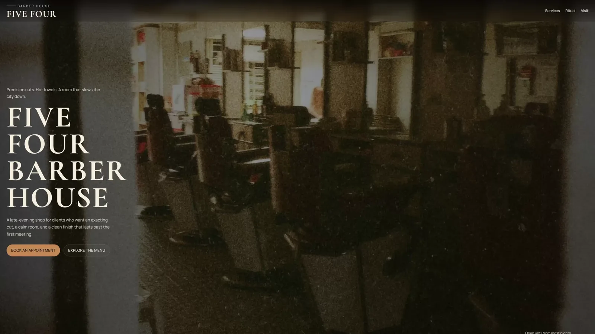
模型改进
GPT-5.4 在多个维度上都有提升，而在前端工作方面，我们重点关注三项实际增益：
- 在整个设计过程中拥有更强的图像理解能力
- 应用和网站的功能更完整
- 更善于使用工具检查、测试并验证自己的工作
图像理解与工具调用
GPT-5.4 经过训练，可以原生使用图像搜索和图像生成工具，从而把视觉推理直接融入设计过程。为获得最佳效果，建议先让模型生成情绪板或若干视觉方案，再选定最终素材。
你可以明确描述图像应体现的属性（例如风格、色板、构图或氛围），以此引导模型找到出色的视觉参考。你还应在提示词中加入相应指令，引导模型复用之前生成的图像、调用图像生成工具创建新的视觉素材，或在需要时引用特定的外部图像。
Default to using any uploaded/pre-generated images. Otherwise use the image generation tool to create visually stunning image artifacts. Do not reference or link to web images unless the user explicitly asks for them.功能改进
该模型经过训练，能够开发更完整、功能更可靠的应用。在长周期任务中，它的表现也会更稳定。过去你认为不可能实现的游戏和复杂用户体验，现在一两轮对话就能完成。
Computer Use 与验证
GPT-5.4 是我们首个针对 computer use 训练的主线模型。它可以原生操作各类界面，配合 Playwright 等工具，还能迭代检查自己的工作、验证行为并优化实现，从而支持更长、更自主的开发工作流。
观看我们的发布视频，了解这些能力的实际效果。
Playwright 对前端开发尤其有价值。它能让模型检查渲染后的页面、测试多种视口、走通应用流程，并发现状态或导航方面的问题。提供 Playwright 工具或 skill，能显著提高 GPT-5.4 产出精致、功能完整界面的可能性。借助更强的图像理解能力，模型还可以直观地验证自己的成果，并在提供参考 UI 时检查两者是否一致。
实用提示速览
如果只想采纳本文中的几项做法，请从这些开始：
- 一开始先选择低推理级别。
- 提前定义设计系统和约束（如排版、色板、布局）。
- 提供视觉参考或情绪板（如附上截图），为模型设定视觉护栏。
- 提前确定叙事或内容策略，以指导模型创作内容。
这里有一个可以直接上手的提示词。
## Frontend tasks
When doing frontend design tasks, avoid generic, overbuilt layouts.
**Use these hard rules:**
- One composition: The first viewport must read as one composition, not a dashboard (unless it's a dashboard).
- Brand first: On branded pages, the brand or product name must be a hero-level signal, not just nav text or an eyebrow. No headline should overpower the brand.
- Brand test: If the first viewport could belong to another brand after removing the nav, the branding is too weak.
- Typography: Use expressive, purposeful fonts and avoid default stacks (Inter, Roboto, Arial, system).
- Background: Don't rely on flat, single-color backgrounds; use gradients, images, or subtle patterns to build atmosphere.
- Full-bleed hero only: On landing pages and promotional surfaces, the hero image should be a dominant edge-to-edge visual plane or background by default. Do not use inset hero images, side-panel hero images, rounded media cards, tiled collages, or floating image blocks unless the existing design system clearly requires it.
- Hero budget: The first viewport should usually contain only the brand, one headline, one short supporting sentence, one CTA group, and one dominant image. Do not place stats, schedules, event listings, address blocks, promos, "this week" callouts, metadata rows, or secondary marketing content in the first viewport.
- No hero overlays: Do not place detached labels, floating badges, promo stickers, info chips, or callout boxes on top of hero media.
- Cards: Default: no cards. Never use cards in the hero. Cards are allowed only when they are the container for a user interaction. If removing a border, shadow, background, or radius does not hurt interaction or understanding, it should not be a card.
- One job per section: Each section should have one purpose, one headline, and usually one short supporting sentence.
- Real visual anchor: Imagery should show the product, place, atmosphere, or context. Decorative gradients and abstract backgrounds do not count as the main visual idea.
- Reduce clutter: Avoid pill clusters, stat strips, icon rows, boxed promos, schedule snippets, and multiple competing text blocks.
- Use motion to create presence and hierarchy, not noise. Ship at least 2-3 intentional motions for visually led work.
- Color & Look: Choose a clear visual direction; define CSS variables; avoid purple-on-white defaults. No purple bias or dark mode bias.
- Ensure the page loads properly on both desktop and mobile.
- For React code, prefer modern patterns including useEffectEvent, startTransition, and useDeferredValue when appropriate if used by the team. Do not add useMemo/useCallback by default unless already used; follow the repo's React Compiler guidance.
Exception: If working within an existing website or design system, preserve the established patterns, structure, and visual language.提升设计效果的技巧
从设计原则入手
定义约束条件，例如只用一个 H1 标题、不超过六个板块、最多两种字体、一种强调色，以及首屏可见区域内只有一个主要行动号召（CTA）。
提供视觉参考
参考截图或情绪板（mood board）能帮助模型推断布局节奏、排版比例、间距体系和图像处理方式。下面是 GPT-5.4 为用户生成并供其审阅的情绪板示例。
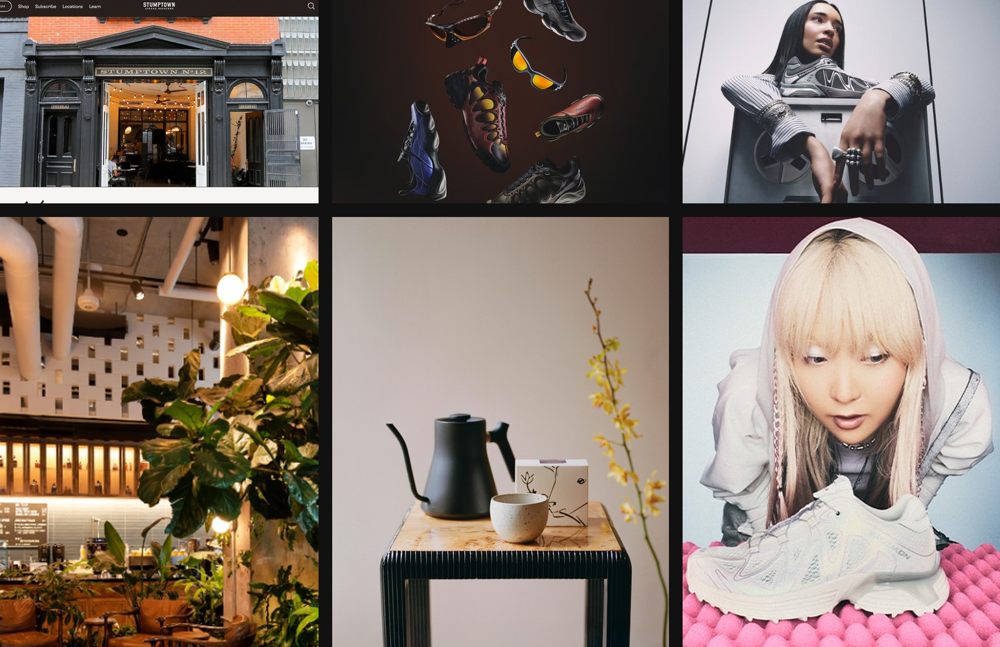
由 GPT-5.4 在 Codex 中生成的情绪板，灵感来自纽约咖啡文化与 Y2K 美学
用叙事来组织页面结构
典型的营销页面结构：
- 首屏：确立身份与承诺
- 辅助图像：展现场景或环境
- 产品详情：说明产品内容
- 社会认同：建立可信度
- 最终行动号召（CTA）：将兴趣转化为行动
要求遵循设计系统
鼓励模型在构建初期就建立清晰的设计系统。定义核心设计令牌（design token），如 background、surface、primary text、muted text 和 accent，以及排版角色，如 display、headline、body 和 caption。这种结构有助于模型在整个应用中产出一致且可扩展的 UI 模式。
对大多数 Web 项目而言，从熟悉的技术栈入手，如 React 和 Tailwind，效果通常不错。GPT-5.4 在这些工具上表现尤为出色，更容易快速迭代并获得精致的成果。
动效和分层 UI 元素会带来复杂度，尤其是固定或浮动组件与主要内容发生交互时。处理动画、浮层或装饰层时，最好加入能引导模型采用安全布局行为的指引。例如：
Keep fixed or floating UI elements from overlapping text, buttons, or other key content across screen sizes. Place them in safe areas, behind primary content where appropriate, and maintain sufficient spacing.适当调低推理强度
对于较简单的网站，推理并非越多越好。实践中，较低和中等的推理级别往往能带来更好的前端效果，让模型保持快速、专注，减少过度思考，同时仍可在面对更有野心的设计时调高推理级别。
用真实内容为设计打底
给模型提供真实文案、产品上下文或清晰的项目目标，是提升前端生成效果最简单的方法之一。有了这些上下文，模型能选择合适的网站结构，写出更清晰的章节叙事，产出更可信的文案，而不是退回到通用的占位符套路。
整合起来：Frontend Skill
为了帮助大家在通用前端任务中更充分地发挥 GPT-5.4 的能力，我们还准备了一个专用的 frontend-skill，见下方。它为模型提供了更有力的结构、审美和交互模式指引，让模型开箱即用就能产出更精致、更有章法、更令人愉悦的设计。
Frontend Skill
---
name: frontend-skill
description: Use when the task asks for a visually strong landing page, website, app, prototype, demo, or game UI. This skill enforces restrained composition, image-led hierarchy, cohesive content structure, and tasteful motion while avoiding generic cards, weak branding, and UI clutter.
---
# Frontend skill
Use this skill when the quality of the work depends on art direction, hierarchy, restraint, imagery, and motion rather than component count.
Goal: ship interfaces that feel deliberate, premium, and current. Default toward award-level composition: one big idea, strong imagery, sparse copy, rigorous spacing, and a small number of memorable motions.
## Working Model
Before building, write three things:
- visual thesis: one sentence describing mood, material, and energy
- content plan: hero, support, detail, final CTA
- interaction thesis: 2-3 motion ideas that change the feel of the page
Each section gets one job, one dominant visual idea, and one primary takeaway or action.
## Beautiful Defaults
- Start with composition, not components.
- Prefer a full-bleed hero or full-canvas visual anchor.
- Make the brand or product name the loudest text.
- Keep copy short enough to scan in seconds.
- Use whitespace, alignment, scale, cropping, and contrast before adding chrome.
- Limit the system: two typefaces max, one accent color by default.
- Default to cardless layouts. Use sections, columns, dividers, lists, and media blocks instead.
- Treat the first viewport as a poster, not a document.
## Landing Pages
Default sequence:
1. Hero: brand or product, promise, CTA, and one dominant visual
2. Support: one concrete feature, offer, or proof point
3. Detail: atmosphere, workflow, product depth, or story
4. Final CTA: convert, start, visit, or contact
Hero rules:
- One composition only.
- Full-bleed image or dominant visual plane.
- Canonical full-bleed rule: on branded landing pages, the hero itself must run edge-to-edge with no inherited page gutters, framed container, or shared max-width; constrain only the inner text/action column.
- Brand first, headline second, body third, CTA fourth.
- No hero cards, stat strips, logo clouds, pill soup, or floating dashboards by default.
- Keep headlines to roughly 2-3 lines on desktop and readable in one glance on mobile.
- Keep the text column narrow and anchored to a calm area of the image.
- All text over imagery must maintain strong contrast and clear tap targets.
If the first viewport still works after removing the image, the image is too weak. If the brand disappears after hiding the nav, the hierarchy is too weak.
Viewport budget:
- If the first screen includes a sticky/fixed header, that header counts against the hero. The combined header + hero content must fit within the initial viewport at common desktop and mobile sizes.
- When using `100vh`/`100svh` heroes, subtract persistent UI chrome (`calc(100svh - header-height)`) or overlay the header instead of stacking it in normal flow.
## Apps
Default to Linear-style restraint:
- calm surface hierarchy
- strong typography and spacing
- few colors
- dense but readable information
- minimal chrome
- cards only when the card is the interaction
For app UI, organize around:
- primary workspace
- navigation
- secondary context or inspector
- one clear accent for action or state
Avoid:
- dashboard-card mosaics
- thick borders on every region
- decorative gradients behind routine product UI
- multiple competing accent colors
- ornamental icons that do not improve scanning
If a panel can become plain layout without losing meaning, remove the card treatment.
## Imagery
Imagery must do narrative work.
- Use at least one strong, real-looking image for brands, venues, editorial pages, and lifestyle products.
- Prefer in-situ photography over abstract gradients or fake 3D objects.
- Choose or crop images with a stable tonal area for text.
- Do not use images with embedded signage, logos, or typographic clutter fighting the UI.
- Do not generate images with built-in UI frames, splits, cards, or panels.
- If multiple moments are needed, use multiple images, not one collage.
The first viewport needs a real visual anchor. Decorative texture is not enough.
## Copy
- Write in product language, not design commentary.
- Let the headline carry the meaning.
- Supporting copy should usually be one short sentence.
- Cut repetition between sections.
- do not include prompt language or design commentary into the UI
- Give every section one responsibility: explain, prove, deepen, or convert.
If deleting 30 percent of the copy improves the page, keep deleting.
## Utility Copy For Product UI
When the work is a dashboard, app surface, admin tool, or operational workspace, default to utility copy over marketing copy.
- Prioritize orientation, status, and action over promise, mood, or brand voice.
- Start with the working surface itself: KPIs, charts, filters, tables, status, or task context. Do not introduce a hero section unless the user explicitly asks for one.
- Section headings should say what the area is or what the user can do there.
- Good: "Selected KPIs", "Plan status", "Search metrics", "Top segments", "Last sync".
- Avoid aspirational hero lines, metaphors, campaign-style language, and executive-summary banners on product surfaces unless specifically requested.
- Supporting text should explain scope, behavior, freshness, or decision value in one sentence.
- If a sentence could appear in a homepage hero or ad, rewrite it until it sounds like product UI.
- If a section does not help someone operate, monitor, or decide, remove it.
- Litmus check: if an operator scans only headings, labels, and numbers, can they understand the page immediately?
## Motion
Use motion to create presence and hierarchy, not noise.
Ship at least 2-3 intentional motions for visually led work:
- one entrance sequence in the hero
- one scroll-linked, sticky, or depth effect
- one hover, reveal, or layout transition that sharpens affordance
Prefer Framer Motion when available for:
- section reveals
- shared layout transitions
- scroll-linked opacity, translate, or scale shifts
- sticky storytelling
- carousels that advance narrative, not just fill space
- menus, drawers, and modal presence effects
Motion rules:
- noticeable in a quick recording
- smooth on mobile
- fast and restrained
- consistent across the page
- removed if ornamental only
## Hard Rules
- No cards by default.
- No hero cards by default.
- No boxed or center-column hero when the brief calls for full bleed.
- No more than one dominant idea per section.
- No section should need many tiny UI devices to explain itself.
- No headline should overpower the brand on branded pages.
- No filler copy.
- No split-screen hero unless text sits on a calm, unified side.
- No more than two typefaces without a clear reason.
- No more than one accent color unless the product already has a strong system.
## Reject These Failures
- Generic SaaS card grid as the first impression
- Beautiful image with weak brand presence
- Strong headline with no clear action
- Busy imagery behind text
- Sections that repeat the same mood statement
- Carousel with no narrative purpose
- App UI made of stacked cards instead of layout
## Litmus Checks
- Is the brand or product unmistakable in the first screen?
- Is there one strong visual anchor?
- Can the page be understood by scanning headlines only?
- Does each section have one job?
- Are cards actually necessary?
- Does motion improve hierarchy or atmosphere?
- Would the design still feel premium if all decorative shadows were removed?在 Codex 应用中运行以下命令，即可安装 frontend-skill：
$skill-installer frontend-skill以下是借助 Frontend Design skill 生成的几个示例网站。
落地页
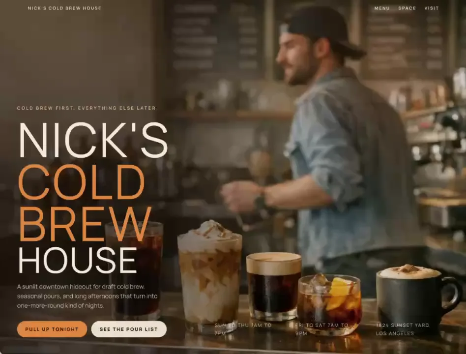
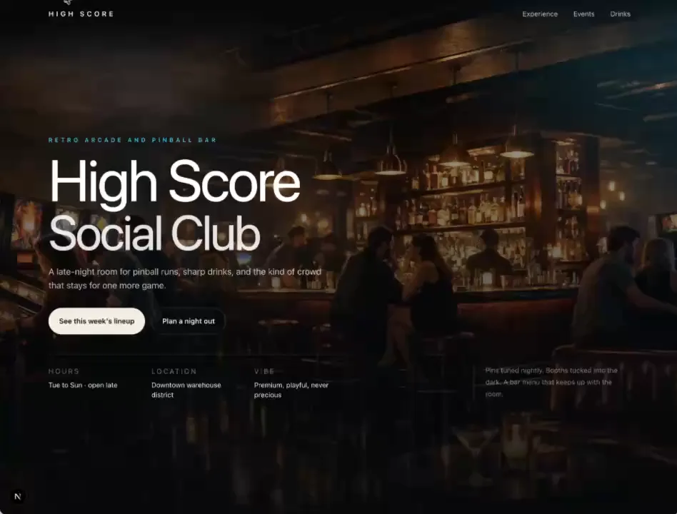
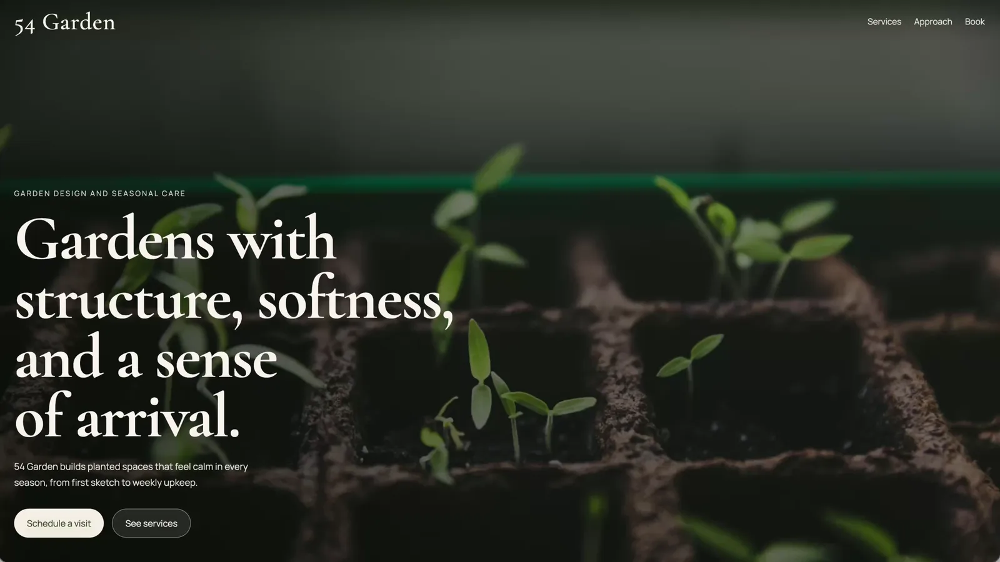
游戏
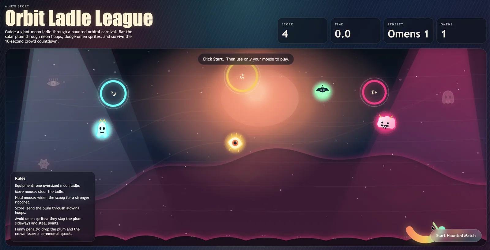
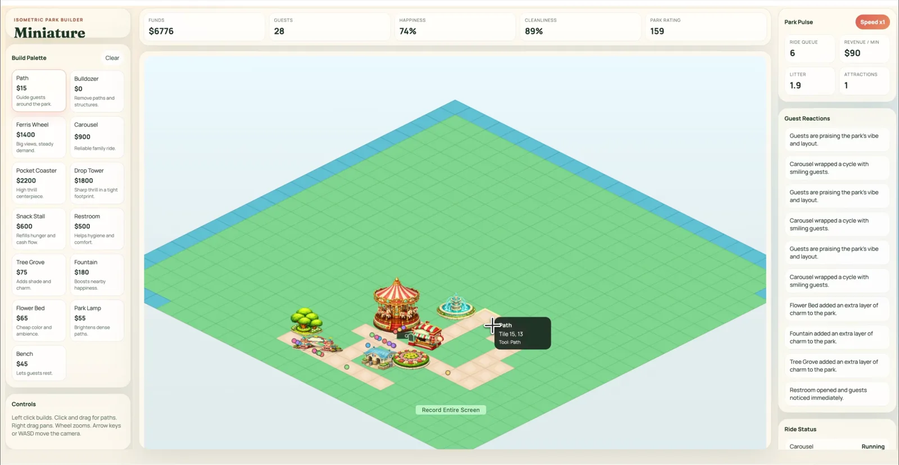
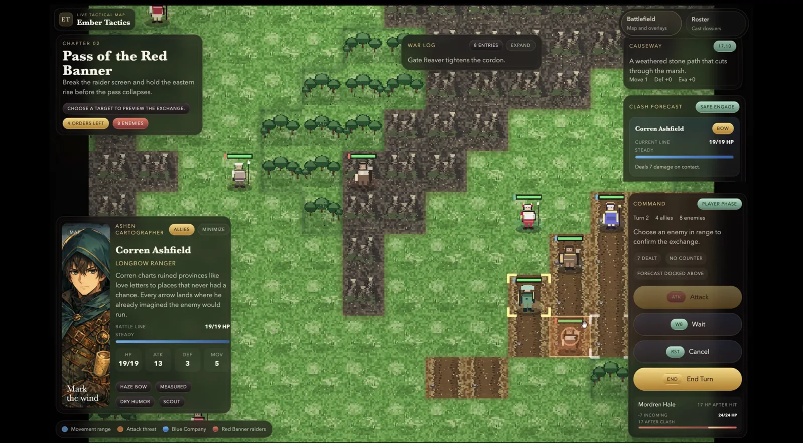
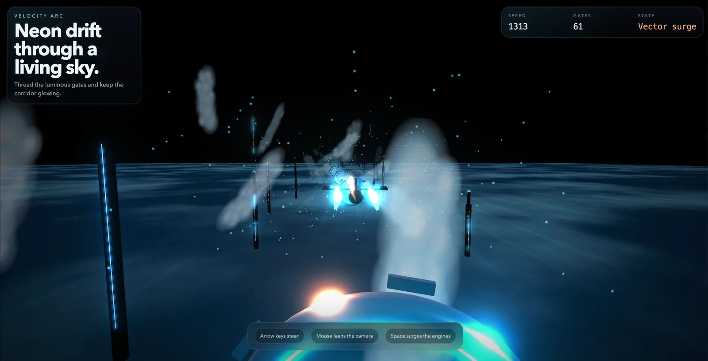
仪表盘
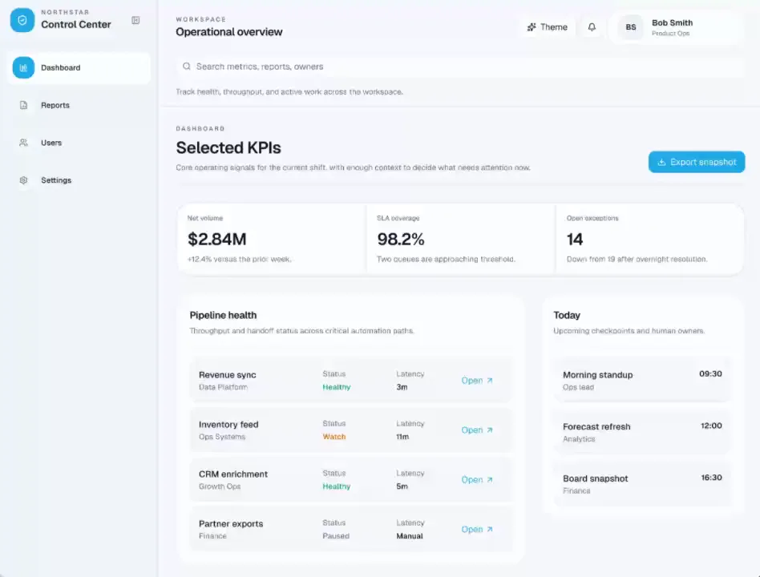
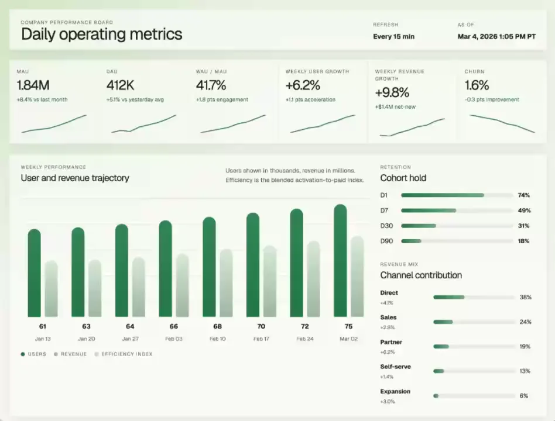
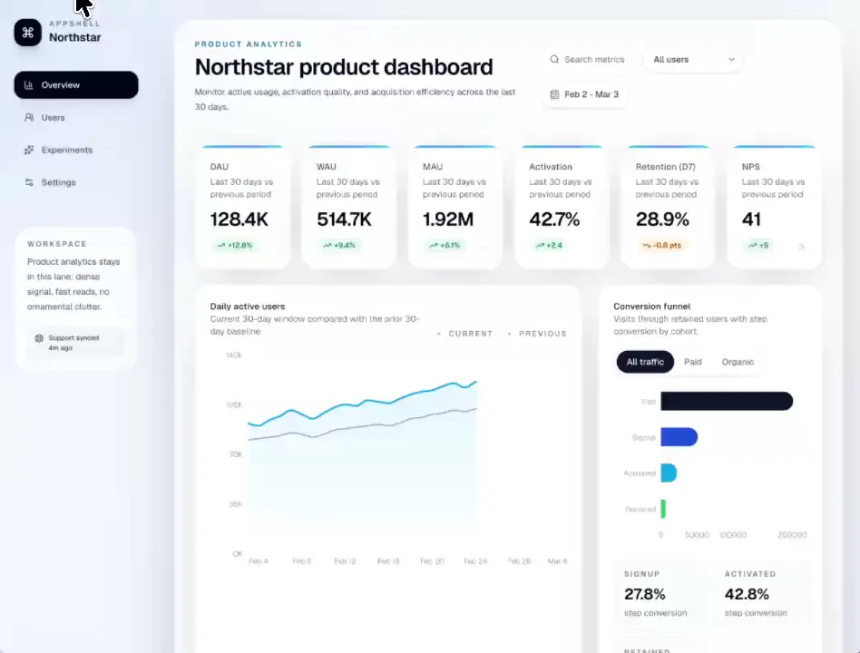
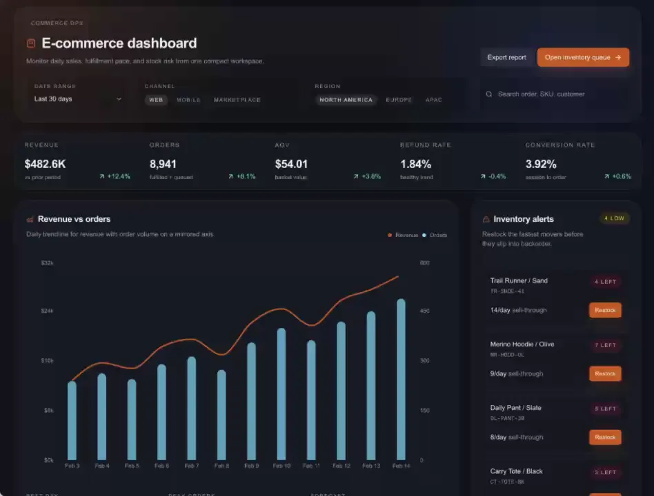
要点
当提示词提供了清晰的设计约束、视觉参考、结构化的叙事和明确的设计系统时，GPT-5.4 就能生成高质量的前端界面。
希望这些技巧能帮助你打造更有辨识度、设计更出色的应用。